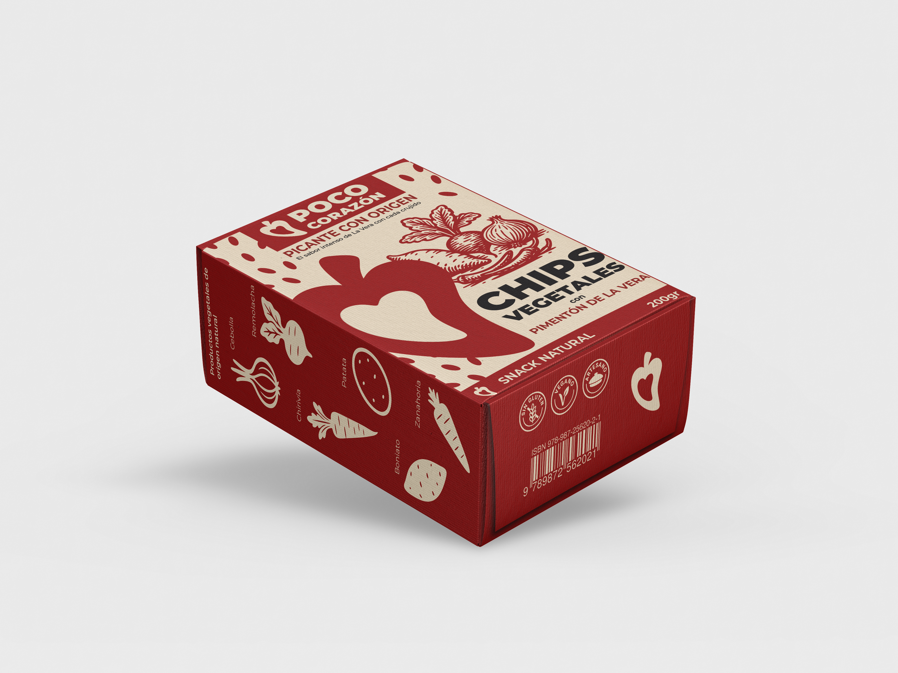
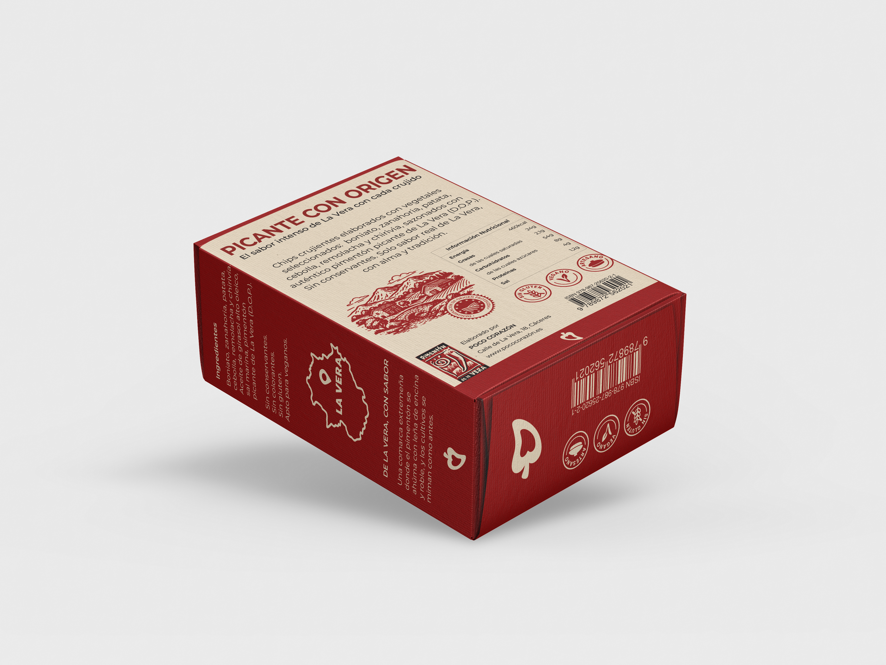
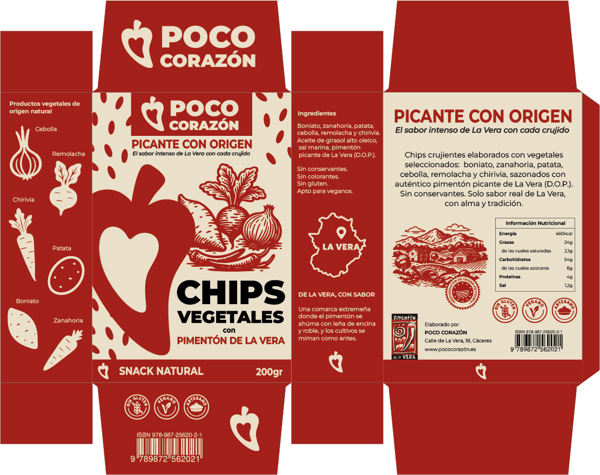

Poco Corazón
Diseño de packaging sostenible e identidad visual para una empresa productora de chips vegetales con pimentón de La Vera.
MEMORIA DEL PROYECTO (PDF)


Diseño de packaging sostenible e identidad visual para una empresa productora de chips vegetales con pimentón de La Vera.
MEMORIA DEL PROYECTO (PDF)

